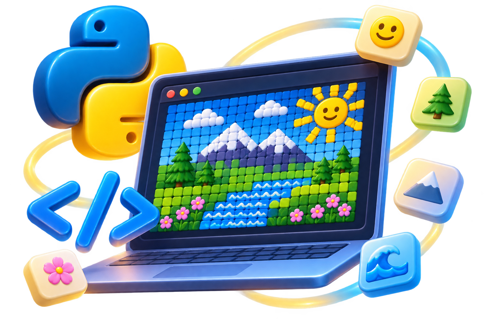

Майстер Python: перші кроки
Розв’язуйте життєві задачі, створюйте власні текстури з емодзі та навчіться використовувати ШІ для перевірки й покращення власного коду.

🎯 6 життєвих місій
Прочитайте ситуацію, оберіть правильні блоки програми й перевірте результат. Після цього спробуйте іншу місію.
Конструктор коду
Натискайте блоки у потрібному порядку. Для скасування натисніть «Прибрати останній».
Ваша програма
Результат виконання
Покрокове пояснення
🔍 Прогноз і дослідження
🎨 Emoji Art: конструктор текстур Python
Створіть власний пейзаж із кольорових квадратів та емодзі. Оберіть інструмент і натискайте клітинки. Код із print() утворюється автоматично — Ви можете скопіювати його та запустити у Python.
Натискайте клітинки, щоб змінювати малюнок. На телефоні це працює дотиком.
🐍 Ваш Python-код
Попередній перегляд
💻 Code Runner: напишіть і запустіть Python
Напишіть власну програму або перенесіть сюди текстуру з емодзі. Натисніть ▶ Запустити, щоб побачити результат. Якщо виникла помилка — прочитайте повідомлення, виправте код і спробуйте ще раз.
Python завантажиться під час першого запуску.
Результат програми
Тут з’явиться результат виконання.
Підтримуються звичайні команди Python, зокрема print(), змінні, умови та цикли. Для програм з input() з’являється вікно введення. Для роботи потрібне підключення до інтернету під час першого завантаження Python.
✨ ШІ-майстерня
Ви — автор програми, а ШІ — редактор і помічник. Спочатку створіть програму самостійно у конструкторі або скопіюйте код Вашої текстури. Лише після цього попросіть ШІ знайти помилки чи покращити оформлення, не переписуючи програму замість Вас.
print("МІЙ ОСТРІВ")
print("🟦🟦🟨🟦")
print("🟦🌴🟨🟦")Що можна попросити у ШІ?«Перевір, чи немає помилок. Запропонуй гарнішу рамку, заголовок і кілька емодзі. Залиш команди print() та поясни лише зміни. Не створюй нову програму замість мене».
📄 Підсумковий звіт
У звіт увійдуть пройдені місії, текстура, Ваш запит до ШІ та висновок. Збережіть сторінку у PDF через вікно друку.